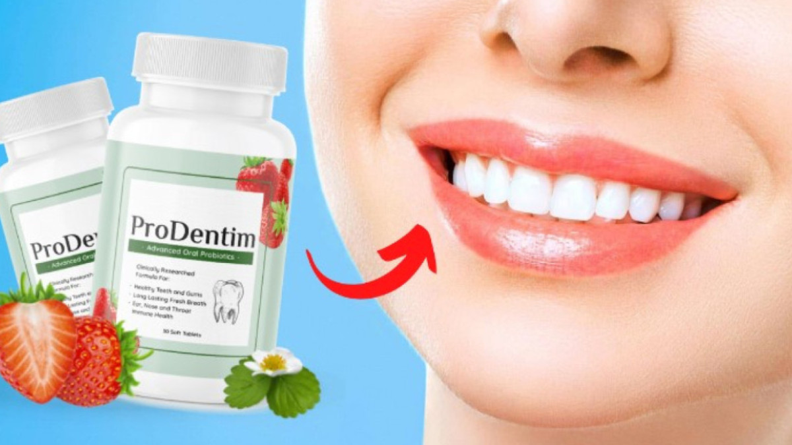

NEW:
The Magic Candy that Rebuilds Teeth and Keeps Your Gums Healthy

Nobody likes the guy/ gal with bad breath.
Especially when you consider this:
Your mouth is an
open, warm, moist, cavity, the exact type of place for harmful bacteria to grow in.
And your teeth are one of those things that once they’re gone, they’re not coming back. Most people don’t treat them as if that were the case though. But do you really want your mouth to end up looking like your grandpas?
(I was going to include a picture of some pretty gnarly teeth, but I decided to spare you...you're welcome.)
Probably not though, right?
So why don’t most people take better care of their oral health?
Well, I know for me personally, it usually comes down to basic laziness; Either I’m in a rush and don’t have the time to brush, or I just don’t feel like making the effort. But this could obviouly lead to problems down the road...
So this got me to thinking, you would think that in 2022, human society would have concocted an easier to way to keep your mouth healthy...
And I found one! But before we get into that, here's a few pretty scary facts about oral health in 2022:
-
By age 8, over half of children (52%) have had a cavity in their primary (baby) teeth.
-
1 in 4 adults aged 20 to 64 currently has cavities.
-
25% of adults do not brush their teeth twice a day. Not brushing twice a day increases the risk of tooth decay by 33%.
-
Although flossing is essential, many people do not like doing it. A whopping 73% of Americans would go to the grocery store than floss their teeth.
-
Your smile is a strong point of attraction. 61% of adults admit that they are attracted to somebody’s smile alone.
-
Many common dental products (such as toothpaste and mouthwash) contain toxic ingredients that can destroy the microbiome in the mouth.
-
The oral cavity contains over 700 species of bacteria
-
Things like smoking, alcohol, antibiotics and pregnancy can disrupt the balance of bacteria in your oral cavity, leading to things like receding gums and tooth decay.
-
Changes in the oral bacteria can also promote the development of systemic diseases like:
- Cardiovascular disease
- Pneumonia
- Pancreatic cancer
- Colorectal cancer
So it’s not just your beautiful smile that’s suffering! An unclean mouth is literally a cesspool of harmful bacteria, destroying your oral cavity, and spreading harmful pathogens throughout your body. Is that a gross enough image?
Simple solution: brush and floss twice a day. But like I said before, not everyone has time for that. And studies have even shown that even If you brush every day, you could be missing large parts of your oral cavity. So, what’s the solution?
Something that’s easier and faster than brushing and flossing:
eating a candy.
Prodentim is an all-natural, peppermint-flavored dissolvable candy that I found online that supplies your oral cavity with all the healthy bacteria it might not be producing on its own.
What Is Protentim and How Does It Work?
It is the first-ever advanced oral probiotics formula that focuses specifically on oral-bacteria supporting strains instead of just gut bacteria (optimizing not only the gut flora, but the oral flora to enhance the mouth microbiome environment by introducing a flood of refreshing healing probiotic bacteria strains)
It contains a blend of 3.5 billion probiotics and nutrients, specifically designed to repopulate your mouth with good bacteria.
Some of the
benefits of taking prodentim include:
-
It aids in the maintenance of healthy teeth and gums.
-
It greatly aids in the rebuilding of your teeth while also increasing the beneficial bacteria in your mouth.
-
It also has pain-relieving properties that prevent muscle and dental arches.
- Independently evaluated and validated by a third party for dosage, purity, and potency
- ProDentim makes it simple to achieve more durable and brighter teeth.
-
ProDentim helps to rebuild your teeth while also increasing the beneficial bacteria in your mouth.
It also has pain-relieving properties that prevent muscle and dental arches. It fights oral infections, reduces the number of harmful germs in your body, and prevents inflammation.
Here’s the link to the website so you can check it out yourself.
I don't know about you, but it would be much easier for me to eat a dissolvable candy every day than brush and floss multiple times a day!
Plus, alot of people seem to be getting really good results with Prodentim...
Sam Perkin is enjoying better oral health…
“I’ve always taken such good care of my teeth but it always felt like I wasn’t doing enough. Now, for the first time in decades, my teeth feel amazing.”
Sam Perkins - Dallas, USA
Portia Thompson loves her fresh breath…
“It’s just unbelievable how much I like ProDentim. I’m so glad my dentist recommended it to me!”
Portia Thompson - Florida, USA
Theo Franklin doesn’t spend fortunes on dentists...
“My gums have never looked better. It feels so good to not have to worry about my teeth. I simply love it!”
Theo Franklin - Chicago, USA
A little easier than brushing right? Thanks for reading!